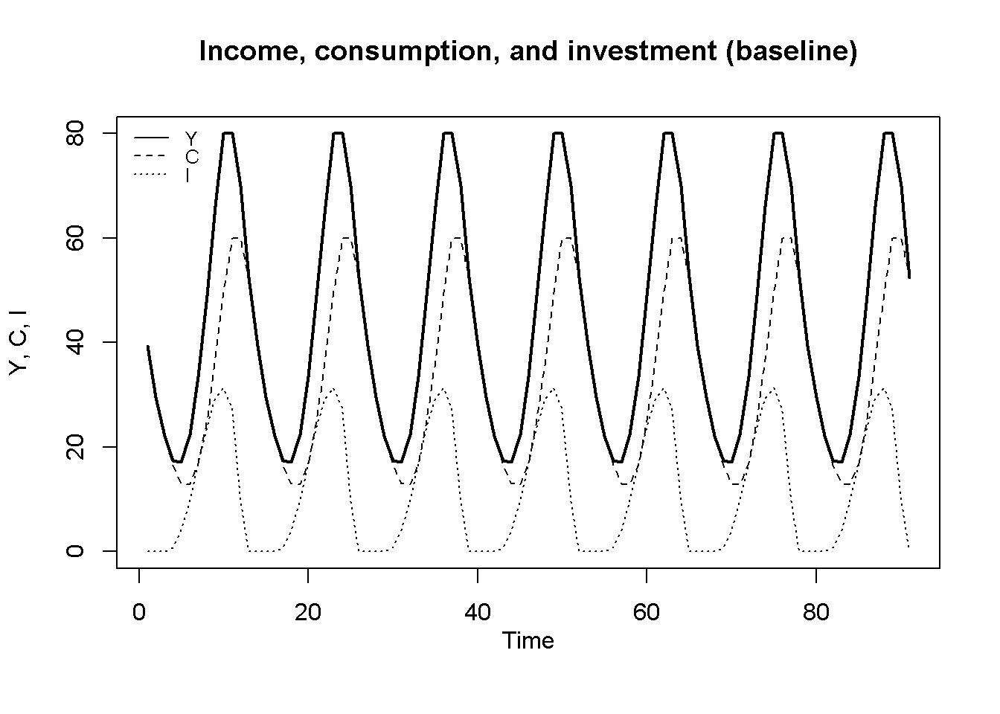
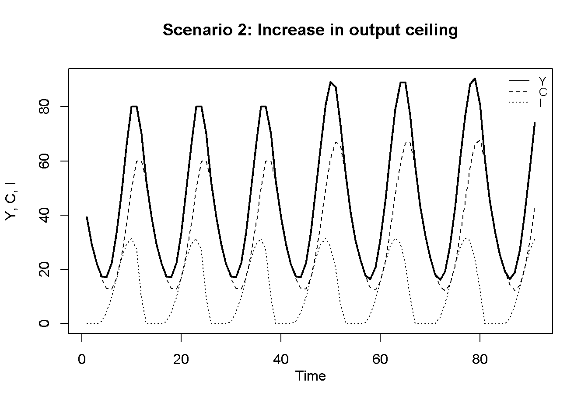
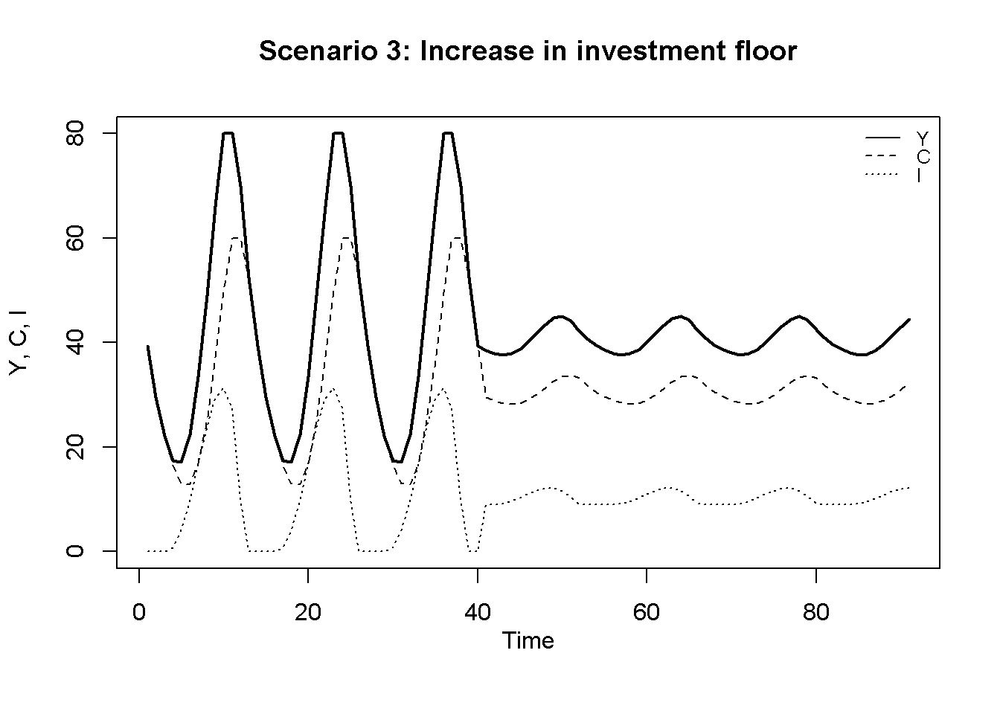
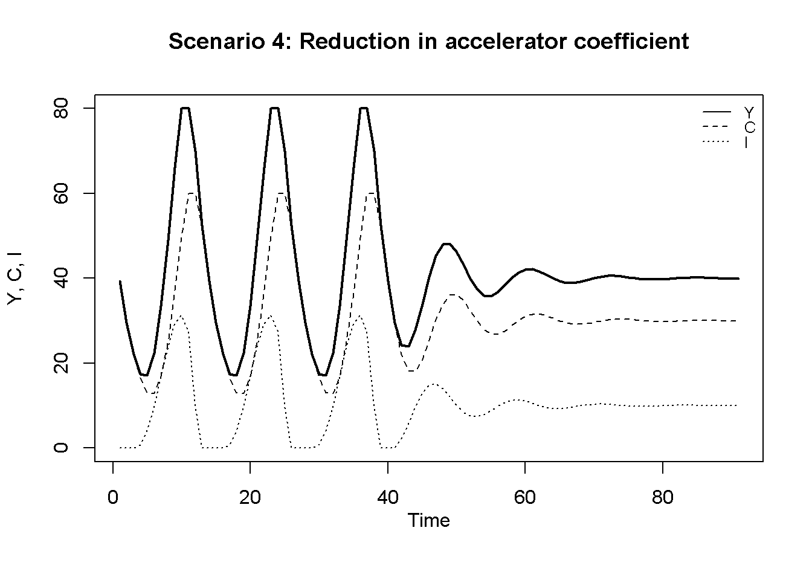
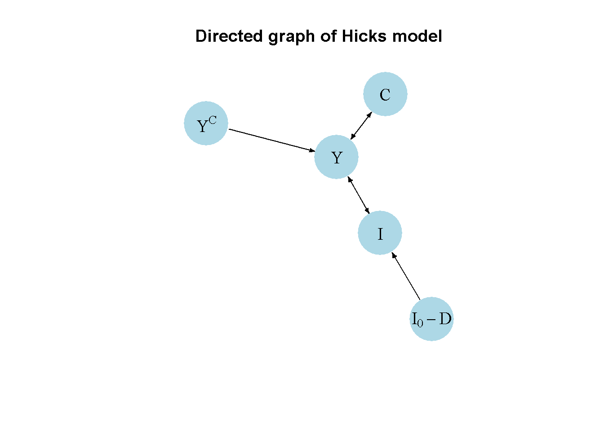
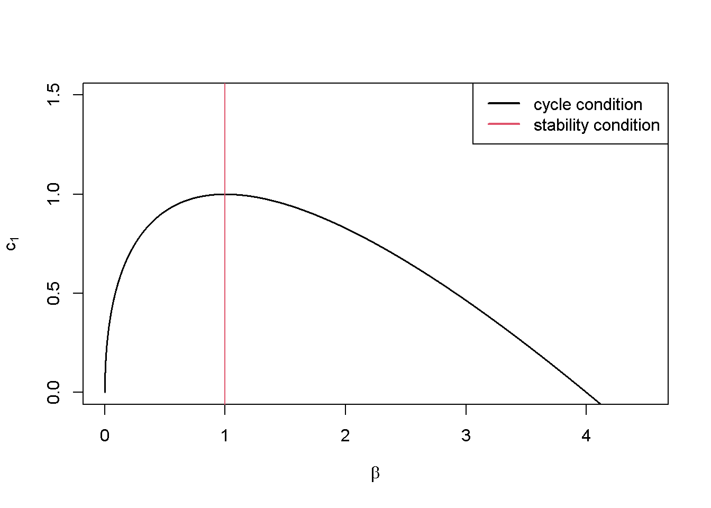

# Clear the environment
rm(list=ls(all=TRUE))
# Set number of periods
Q=200
# Set number of scenarios (including baseline)
S=4
# Set period in which shock/shift will occur
s=50
# Create (S x Q)-matrices that will contain the simulated data
Y=matrix(data=1,nrow=S,ncol=Q) # Income/output
C=matrix(data=1,nrow=S,ncol=Q) # Consumption
I=matrix(data=1,nrow=S,ncol=Q) # Investment
# Set fixed parameter values
c0=0
c1=0.75
I0=10
# Set baseline parameter values
Yc=matrix(data=80,nrow=S,ncol=Q) # output ceiling
D=matrix(data=10,nrow=S,ncol=Q) # investment floor (depreciation)
beta=matrix(data=1.25,nrow=S,ncol=Q) # accelerator coefficient
# Set parameter values for different scenarios
Yc[2,s:Q]=100 # scenario 2: increase in output ceiling
D[3,s:Q]=1 # scenario 3: increase in investment floor
beta[4,s:Q]=0.8 # scenario 4: reduction in accelerator coefficient
# Simulate the model by looping over Q time periods for S different scenarios
for (i in 1:S){
for (t in 2:Q){
for (iterations in 1:500){ # run the model 500-times in each period
#Model equations
#(1) Output
Y[i,t] = min(C[i,t]+I[i,t], Yc[i,t])
#(2) Consumption
C[i,t] = c0 + c1*Y[i,t-1]
#(3) Investment
I[i,t] = I0 + max(beta[i,t]*(Y[i,t-1] - Y[i,t-2]), -D[i,t])
} # close iterations loop
} # close time loop
} # close scenario loop16 A Hicksian Business Cycle Model with Floors and Ceilings
Overview
This model captures some key features of John R. Hicks (1950)’ nonlinear model of business cycle fluctuations. The model builds on Samuelson (1939)’s linear multiplier-accelerator model analysed in Chapter 2 and Chapter 9, but gives it a different twist. While Samuelson (1939)’s business cycle model requires repeated external shocks to produce sustained cycles, Hicks (1950)’s model produces permanent, shock-independent fluctuations that are bounded by a floor and a ceiling. The goods market equilibrium is assumed to be locally unstable due to a strong accelerator effect, i.e. investment reacts strongly to increases in aggregate output, which creates more output and boosts investment even further. However, aggregate output is constrained by a ceiling that may stem from full employment (and a fixed labour supply). On the downward trajectory, output is constrained by a floor that is given by a minimum amount of investment needed to replace the depreciated capital stock.
We present a version of the model that is adapted from Gabisch and Lorenz (1989), chapter 2.1.1
The Model
\[ Y_{t}=\min[C_t + I_t, Y^C] \tag{16.1}\]
\[ C_{t} = c_0 + c_1 Y_{t-1}, \quad c_1 \in (0,1) \tag{16.2}\]
\[ I_{t} = I_0 + \max[\beta(Y_{t-1} - Y_{t-2}), -D], \quad \beta > 1, D >0 \tag{16.3}\]
where \(Y_t\), \(C_t\), \(I_t\), \(Y^C\), and \(D\), represent output, consumption, investment, the (full employment) output ceiling, and depreciation, respectively.
Equation 16.1 specifies aggregate income. For values below the ceiling \(Y^C\), aggregate income is determined by aggregate demand (consisting only of consumption and net investment). As soon as aggregate demand hits the ceiling, aggregate income is given by the ceiling. Equation 16.2 is a simple linear Keynesian consumption function. Equation 16.3 is the investment function. For investment levels above depreciation \(D\), net investment is given by an autonomous component \(I_0\) and an accelerator component that is responsive to the change in aggregate income.2 The reaction coefficient \(\beta\) is assumed to be sufficiently large to generate explosive dynamics. Once the change in aggregate income has fallen below the negative of the level of depreciation \(D\), net investment is given by the floor \(I_0 - D\).
Simulation
Parameterisation
Table 1 reports the parameterisation used in the simulation. Besides a baseline (scenario 1), we consider a fall in the output ceiling \(Y^C\) in scenario 2, an increase in the investment floor \(I_0 - D\) in scenario 3, and finally a decrease in the accelerator coefficient \(\beta\) (scenario 4).
Table 1: Parameterisation
| Scenario | \(c_0\) | \(c_1\) | \(I_0\) | \(\beta\) | \(Y^C\) | \(D\) |
|---|---|---|---|---|---|---|
| 1: baseline | 0 | 0.75 | 10 | 1.25 | 80 | 10 |
| 2: fall in output ceiling (\(Y^C\)) | 0 | 0.75 | 10 | 1.25 | 100 | 10 |
| 3: increase in investment floor (\(I_0 - D\)) | 0 | 0.75 | 10 | 1.25 | 80 | 1 |
| 4: decrease in accelerator coefficient (\(\beta\)) | 0 | 0.75 | 10 | 0.8 | 80 | 10 |
Simulation code
Python code
import numpy as np
# Set number of periods
Q = 200
# Set number of scenarios (including baseline)
S = 4
# Set period in which shock/shift will occur
s = 50
# Create (S x Q)-arrays that will contain the simulated data
Y = np.ones((S, Q)) # Income/output
C = np.ones((S, Q)) # Consumption
I = np.ones((S, Q)) # Investment
# Set fixed parameter values
c0 = 0
c1 = 0.75
I0 = 10
# Set baseline parameter values
Yc = np.full((S, Q), 80) # output ceiling
D = np.full((S, Q), 10) # investment floor (depreciation)
beta = np.full((S, Q), 1.25) # accelerator coefficient
# Set parameter values for different scenarios
Yc[1, s:Q] = 100 # scenario 2: increase in output ceiling
D[2, s:Q] = 1 # scenario 3: increase in investment floor
beta[3, s:Q] = 0.8 # scenario 4: reduction in accelerator coefficient
# Simulate the model by looping over Q time periods for S different scenarios
for i in range(S):
for t in range(1, Q):
for iterations in range(500): # run the model 500-times in each period
# Model equations
# (1) Output
Y[i, t] = min(C[i, t] + I[i, t], Yc[i, t])
# (2) Consumption
C[i, t] = c0 + c1 * Y[i, t - 1]
# (3) Investment
I[i, t] = I0 + max(beta[i, t] * (Y[i, t - 1] - Y[i, t - 2]), -D[i, t])
# Close iterations loop
# Close time loop
# Close scenario loopPlots
Figure 16.1 displays the model’s dynamics under the baseline scenario. The model generates cycles in aggregate output, consumption and investment that are constrained by the output ceiling \(Y^C=80\) and the investment floor \(I_0-D=0\). These cycles are permanent, i.e. they don’t require any external shocks, and they are (roughly) periodic, with a cycle length from peak (trough) to peak (trough) of around 13.5 periods. What generates the turning points? Suppose income is on an increasing trajectory. The accelerator effect on investment will amplify this process as firms will increase their investment, which raises aggregate demand and increases income further. When the output ceiling is reached, the change in income becomes zero, and investment demand decreases relative to the boom phase. This decrease in investment lowers aggregate output, and the accelerator effect again amplifies this tendency that now plays out on a downward trajectory until net investment hits the lower bound. Once investment has stopped its downward trajectory, aggregate income stops falling as well, which allows the accelerator effect to turn positive again and thereby induce a new cycle.
# Set start and end periods for plots
Tmax=100
Tmin =10
#Income, consumption, and investment
plot(Y[1, Tmin:(Tmax)],type="l", col=1, lwd=2, lty=1, xlab="", ylab="Y, C, I", ylim=range(I[1, Tmin:Tmax],Y[1, Tmin:(Tmax)]))
title(main="Income, consumption, and investment (baseline)", xlab = 'Time',cex=0.8,line=2)
lines(C[1, Tmin:Tmax],lty=2)
lines(I[1, Tmin:Tmax],lty=3)
legend("topleft", legend=c("Y", "C", "I"),
lty=1:3, cex=0.8, bty = "n", y.intersp=0.8)

In Figure 16.2, the output ceiling rises to \(Y^C = 100\) in \(t=50\). This raises the amplitude of the cycles. Interestingly, the ceiling is no longer binding, but the cycles still do not explode. This illustrates a feature of the model that has been noted before: it actually does not need a ceiling to generate bounded cycles (see, e.g., Puu, Gardini, and Sushko (2005)). The acceleration of income during a boom will become smaller and smaller, and eventually turn negative, thereby lowering investment and inducing a switch from boom to bust. Hence, cycles (and thus turning points) will occur even without floor and ceilings, but to prevent these cycles to become larger and larger, a floor is sufficient.
# Scenario 2: increase in ceiling
plot(Y[2, Tmin:(Tmax)],type="l", col=1, lwd=2, lty=1, xlab="", ylab="Y, C, I", ylim=range(I[2, Tmin:Tmax],Y[2, Tmin:(Tmax)]))
title(main="Scenario 2: Increase in output ceiling", xlab = 'Time',cex=0.8,line=2)
lines(C[2, Tmin:Tmax],lty=2)
lines(I[2, Tmin:Tmax],lty=3)
legend("topright", legend=c("Y", "C", "I"),
lty=1:3, cex=0.8, bty = "n", y.intersp=0.8)

An increase in the investment floor to \(I_0 - D = 9\) in period \(t=50\), displayed in Figure 16.3, has the effect of reducing the amplitude of the fluctuations. Intuitively, the milder the bust, the milder the recovery.
# Scenario 3: increase in investment floor
plot(Y[3, Tmin:(Tmax)],type="l", col=1, lwd=2, lty=1, xlab="", ylab="Y, C, I", ylim=range(I[3, Tmin:Tmax],Y[3, Tmin:(Tmax)]))
title(main="Scenario 3: Increase in investment floor", xlab = 'Time',cex=0.8,line=2)
lines(C[3, Tmin:Tmax],lty=2)
lines(I[3, Tmin:Tmax],lty=3)
legend("topright", legend=c("Y", "C", "I"),
lty=1:3, cex=0.8, bty = "n", y.intersp=0.8)

Finally, Figure 16.4 displays the scenario where the accelerator coefficient \(\beta\) falls, rendering investment much less sensitive to changes in aggregate income. As a result, the model’s regular cycles turn into damped oscillations that eventually converge to a stable equilibrium.
# Scenario 4: Reduction in accelerator coefficient
plot(Y[4, Tmin:(Tmax)],type="l", col=1, lwd=2, lty=1, xlab="", ylab="Y, C, I", ylim=range(I[4, Tmin:Tmax],Y[4, Tmin:(Tmax)]))
title(main="Scenario 4: Reduction in accelerator coefficient", xlab = 'Time',cex=0.8,line=2)
lines(C[4, Tmin:Tmax],lty=2)
lines(I[4, Tmin:Tmax],lty=3)
legend("topright", legend=c("Y", "C", "I"),
lty=1:3, cex=0.8, bty = "n", y.intersp=0.8)

Python code
### Plots (here only for baseline)
import matplotlib.pyplot as plt
# Set start and end periods for plots
Tmax = 100
Tmin = 10
# Plot income (Y), consumption (C), and investment (I)
plt.plot(range(Tmin, Tmax), Y[0, Tmin:Tmax], label='Y', color='black', linewidth=2, linestyle='-')
plt.title("Income, consumption, and investment (baseline)", fontsize=10)
plt.xlabel('Time')
plt.ylabel('Y, C, I')
plt.plot(range(Tmin, Tmax), C[0, Tmin:Tmax], label='C', linestyle='--', color='black',)
plt.plot(range(Tmin, Tmax), I[0, Tmin:Tmax], label='I', linestyle=':', color='black',)
# Add a legend to the top-left corner
plt.legend(loc='upper left', fontsize=8, frameon=False)
# Show the plot
plt.show()Directed graph
Another perspective on the model’s properties is provided by its directed graph. A directed graph consists of a set of nodes that represent the variables of the model. Nodes are connected by directed edges. An edge directed from a node \(x_1\) to node \(x_2\) indicates a causal impact of \(x_1\) on \(x_2\).
## Create directed graph
# Construct auxiliary Jacobian matrix for 5 variables:
# endogenous: (1) Y, (2) C, (3) I
# exogenous: (4) I0-D, (5) Yc
#Y C I I0-D Yc
M_mat=matrix(c(0,1,1, 0, 1, # Y
1,0,0, 0, 0, # C
1,0,0, 1, 0, # I
0,0,0, 0, 0, # I0-D
0,0,0, 0, 0),# Yc
5, 5, byrow=TRUE)
# Create adjacency matrix from transpose of auxiliary Jacobian and add column names
A_mat=t(M_mat)
# Create directed graph from adjacency matrix
library(igraph)
dg=graph_from_adjacency_matrix(A_mat, mode="directed", weighted= NULL)
# Define node labels
V(dg)$name=c("Y", "C", "I", expression(I[0]-D), expression(Y^C))
# Plot directed graph matrix
plot(dg, main="Directed graph of Hicks model", vertex.size=40, vertex.color="lightblue",
vertex.label.color="black", edge.arrow.size=0.3, edge.width=1.1, edge.size=1.2,
edge.arrow.width=1.2, edge.color="black", vertex.label.cex=1.2,
vertex.frame.color="NA", margin=-0.08)
Python code
### Directed graph
import networkx as nx
# Construct auxiliary Jacobian matrix for 5 variables:
# endogenous: (1) Y, (2) C, (3) I
# exogenous: (4) I0-D, (5) Yc
# Create the matrix M_mat
M_mat = np.array([[0, 1, 1, 0, 1], # Y
[1, 0, 0, 0, 0], # C
[1, 0, 0, 1, 0], # I
[0, 0, 0, 0, 0], # I0-D
[0, 0, 0, 0, 0]]) # Yc
# Create adjacency matrix from transpose of auxiliary Jacobian
A_mat = M_mat.T
# Create directed graph from adjacency matrix using networkx
G = nx.DiGraph(A_mat)
# Define node labels
nodelabs = {0: "Y", 1: "C", 2: "I", 3: "$I_0 - D$", 4: "$Y^C$"}
# Plot directed graph
pos = nx.spring_layout(G, k=0.08)
nx.draw_networkx(G, pos, node_size=200, node_color="lightblue",
edge_color="black", width=1.2, arrowsize=10,
arrowstyle='->', font_size=8, font_color="black",
with_labels=True, labels=nodelabs)
plt.axis("off")
plt.title("Directed Graph of Lewis Model")
plt.show()It can thus be seen that the key exogenous variables in the Hicks (1950) model are the output ceiling \(Y^C\) and the investment floor \(I_0 - D\), which constrain the endogenous cycle generated by the interaction between the endogenous variables income \(Y\), investment \(I\), and consumption \(C\).
Analytical discussion
The dynamic properties of the Hicks (1950) model when the floor and ceiling are not binding are similar, but not entirely equivalent to the Samuelson (1939) model analysed in Chapter 9.
First, define \(X_t = Y_{t-1}\) to re-write the system as:
\[ X_{t}=\min[C_{t-1} + I_{t-1}, Y^C] \tag{16.4}\]
\[ C_{t} = c_0 + c_1 X_{t} \tag{16.5}\]
\[ I_{t} = I_0 + \max[\beta(X_{t} - X_{t-1}), -D]. \tag{16.6}\]
Then shift Equation 16.5 one period back and substite into Equation 16.4 to obtain:
\[ X_{t}=\min [c_0 + c_1 X_{t-1} + I_{t-1}, Y^C]. \tag{16.7}\]
Next, substitute Equation 16.7 into Equation 16.6:
\[ I_{t} = I_0 + \max[\beta( c_0 + (c_1 -1) X_{t-1} + I_{t-1}), -D]. \tag{16.8}\]
Equation 16.7 and Equation 16.8 are a two-dimensional dynamic system in \(X_t\) and \(It\).
For \(Y_t < Y^C\) and \(I_t > I_0 - D\), the system’s Jacobian matrix is given by:
\[ J=\begin{bmatrix} c_1 & 1 \\ \beta(c_1-1) & \beta \end{bmatrix}. \]
The characteristic polynomial yielding the eigenvalues of the Jacobian is:
\[\lambda^2-\lambda(c_1+\beta)+\beta=0,\]
where \(c_1+\beta =tr(J)\) and \(\beta = det(J)\).
Thus, we have:
\[ \lambda_{1,2} = \frac{(c_1+\beta) \pm \sqrt{(c_1+\beta)^2-4\beta}}{2}, \]
and two eigenvalues will be a pair of complex conjugates if \((c_1+\beta)^2-4\beta <0\) or \(\left( \frac{c_1+\beta}{2} \right)^2 < \beta\).
To assess stability, we need to check whether the modulus of the complex eigenvalue \(R\) is inside the unit circle, i.e. \(R \in (-1,1)\). For a two-dimensional system with complex eigenvalues, we have \(R=\sqrt{det(J)}\). Thus, the stability condition for the Hicks model is \(\beta <1\).
The following code generates a plot that displays the condition for cycles, \(\left( \frac{c_1+\beta}{2} \right)^2 < \beta\), and the stability condition, \(\beta <1\), in the \((\beta, c_1)\)-space:3
# Create function for cycle condition using beta as argument
cyc= function (beta) {
2*sqrt(beta)-beta
}
# Plot the two conditions in (beta, c1)-space
curve(cyc, from = 0, to = 4.5, col = 1, xlab=expression(beta), ylab=expression(c[1]) , main="",
lwd=1.5, n=10000, ylim=range(0,1.5))
abline(v=1, col=2)
legend("topright", legend = c("cycle condition", "stability condition"),
col = c(1, 2), lwd = 2)
Python code
# Create function for cycle condition using beta as an argument
def cyc(beta):
return 2 * np.sqrt(beta) - beta
# Define the range for beta
beta_values = np.linspace(0, 4.5, 10000)
# Compute the corresponding c1 values using the cyc function
c1_values = cyc(beta_values)
# Plot the cycle condition in (beta, c1)-space
plt.plot(beta_values, c1_values, color='black', linewidth=1.5, label='cycle condition')
# Plot the stability condition as a vertical line at beta = 1
plt.axvline(x=1, color='red', linewidth=2, label='stability condition')
# Set labels and title
plt.xlabel(r'$\beta$', fontsize=12)
plt.ylabel(r'$c_1$', fontsize=12)
plt.title('')
# Set y-axis limit
plt.ylim(0, 1.5)
# Add legend
plt.legend(loc='upper right')
# Show the plot
plt.show()The Hicks model requires combinations of \(c_1\) and \(\beta\) below the cycle condition and to the right of the stability condition to yield cycles that would be explosive without the floor.
We can also compute the eigenvalues and check the general stability conditions numerically.
### Stability analysis
## Baseline
# Construct Jacobian matrix
J_base=matrix(c(c1, 1,
beta[1,1]*(c1-1), beta[1,1]),
2, 2, byrow=TRUE)
# Obtain eigenvalues
ev_base=eigen(J_base)
(evals_base = ev_base$values)[1] 1+0.5i 1-0.5i# Obtain determinant and trace
(det=det(J_base)) # determinant[1] 1.25[1] 1.118034#Check general stability conditions
print(1+tr+det>0)[1] TRUEprint(1-tr+det>0)[1] TRUEprint(1-det>0)[1] FALSE# Check analytical stability condition
beta[1,1] < 1[1] FALSE## Compare with scenario 4
J_scen4=matrix(c(c1, 1,
beta[4,s]*(c1-1), beta[4,s]),
2, 2, byrow=TRUE)
# Obtain eigenvalues
ev_scen4=eigen(J_scen4)
(evals_scen4 = ev_scen4$values)[1] 0.775+0.4465143i 0.775-0.4465143i# Obtain determinant and trace
(det=det(J_scen4)) # determinant[1] 0.8[1] 0.8944272#Check general stability conditions
print(1+tr+det>0)[1] TRUEprint(1-tr+det>0)[1] TRUEprint(1-det>0)[1] TRUE# Check analytical stability condition
beta[4,s] < 1[1] TRUEFor the baseline, the modulus of the complex eigenvalue is indeed larger than unity and the system thus unstable. This is due to the accelerator coefficient \(\beta\) being larger than unity. By contrast, in scenario 4, we have \(\beta < 1\) and the system is thus stable.
### Check cycle condition and compute cycle length (baseline)
# Check analytical cycle condition
(c1+beta[1,1])^2 - 4*beta[1,1] < 0[1] TRUE# Save real and imaginary part of complex eigenvalue
re=Re(evals_base[1])
im=Im(evals_base[1])
# Calculate cycle length
L=(2*pi)/(acos(re/mod_base))
L[1] 13.55164The analytical cycle condition confirms that the eigenvalues of the system will be complex and thus generate cycles. The implied cycle length is around 13.5 periods.
Python code
### Stability Analysis - Baseline
# Construct the Jacobian matrix for the baseline scenario
J_base = np.array([[c1, 1],
[beta[0, 0] * (c1 - 1), beta[0, 0]]])
# Obtain eigenvalues
evals_base, _ = np.linalg.eig(J_base)
print("Eigenvalues (Baseline):", evals_base)
# Obtain determinant and trace
det_base = np.linalg.det(J_base) # determinant
tr_base = np.trace(J_base) # trace
# Calculate modulus of the first eigenvalue
mod_base = np.abs(evals_base[0])
print("Modulus (Baseline):", mod_base)
# Check general stability conditions
print("Stability conditions (Baseline):")
print(1 + tr_base + det_base > 0)
print(1 - tr_base + det_base > 0)
print(1 - det_base > 0)
# Check analytical stability condition
print("Analytical stability condition (Baseline):", beta[0, 0] < 1)
### Compare with Scenario 4
# Construct the Jacobian matrix for scenario 4
J_scen4 = np.array([[c1, 1],
[beta[3, s] * (c1 - 1), beta[3, s]]])
# Obtain eigenvalues
evals_scen4, _ = np.linalg.eig(J_scen4)
# Print eigenvalues
print("Eigenvalues (Scenario 4):", evals_scen4)
# Obtain determinant and trace
det_scen4 = np.linalg.det(J_scen4) # determinant
tr_scen4 = np.trace(J_scen4) # trace
# Calculate modulus of the first eigenvalue
mod_scen4 = np.abs(evals_scen4[0])
print("Modulus (Scenario 4):", mod_scen4)
# Check general stability conditions
print("Stability conditions (Scenario 4):")
print(1 + tr_scen4 + det_scen4 > 0)
print(1 - tr_scen4 + det_scen4 > 0)
print(1 - det_scen4 > 0)
# Check analytical stability condition
print("Analytical stability condition (Scenario 4):", beta[3, s] < 1)
### Check cycle condition (baseline)
cycle_condition = (c1 + beta[0, 0])**2 - 4 * beta[0, 0] < 0
print("Cycle condition (Baseline):", cycle_condition)
# Save real and imaginary parts of the complex eigenvalue
re = np.real(evals_base[0])
im = np.imag(evals_base[0])
# Calculate cycle length (L)
L = (2 * np.pi) / np.arccos(re / mod_base)
print("Cycle length (Baseline):", L)References
Gabisch, Günter, and Hans-Walter Lorenz. 1989. Business Cycle Theory. A Survey of Methods and Concepts, 2nd Edition. Springer-Verlag.
Hicks, John R. 1950. A Contribution to the Theory of the Trade Cycle. Clarendon Press.
Hommes, Cars H. 1995. “A reconsideration of Hicks’ non-linear trade cycle model.” Structural Change and Economic Dynamics 6 (4): 435–95. https://doi.org/10.1016/0954-349X(95)00032-I.
Puu, Tönu, Laura Gardini, and Irina Sushko. 2005. “A Hicksian Multiplier-Accelerator Model with Floor Determined by Capital Stock.” Journal of Economic Behavior & Organization 56 (3): 331–48. https://doi.org/10.1016/j.jebo.2003.10.008.
Samuelson, Paul A. 1939. “Interactions between the Multiplier Analysis and the Principle of Acceleration.” The Review of Economics and Statistics 21 (2): 75–78. https://doi.org/10.2307/1927758.
Following Hommes (1995), we consider a stationary version of the model that abstracts from the growth path assumed in Hicks (1950).↩︎
This differs from Samuelson (1939), who assumed that investment reacts to changes in consumption, see Chapter 2.↩︎
To create the function for the cycle condition, we set \(\left( \frac{c_1+\beta}{2} \right)^2 = \beta\) and solve for \(c_1\), where we only consider positive values for \(c_1\) and \(\beta\).↩︎